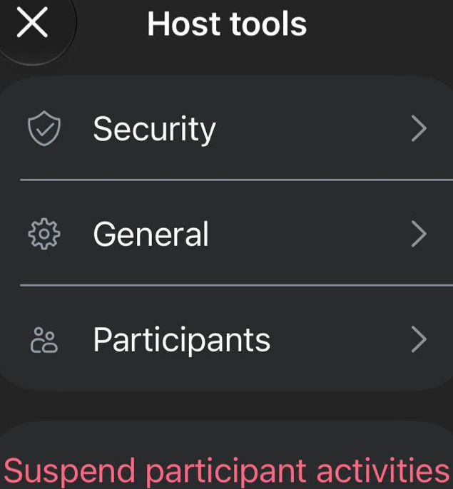
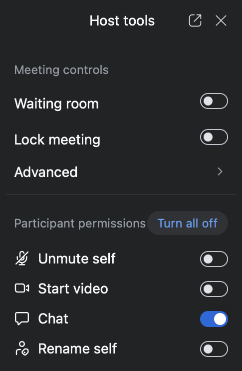
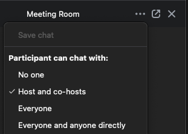

Active Disruption
3-Step Response
1. Suspend disruption and 2. Continue shares, then 3. Restore settings.
1. Suspend disruption
Host tools → Suspend participant activities or Turn all off → Suspend.
-
Suspend participant activities or Turn all off disables Host tools (Unmute, Video), muting everyone & stopping all video (including you & the sharer).
- Co-hosts can Unmute themselves, Start video, and Ask to unmute.
View screenshots


2. Continue shares promptly
-
First, REASSURANCE (adhere precisely to ALL steps, or no guarantees!):
“We’ve briefly suspended the meeting to restore serenity, & will now continue as normal. Video, unmute, & chat are disabled, so no further disruption is possible. Please share with confidence!”
-
Ongoing, Announce who you Ask to unmute:
- Ask the interrupted sharer to unmute.
- Be ready to Mute as needed.
3. Restore meeting Host tools
-
Swiftly disable Lock meeting & boldly disable Enable waiting room.
“We do not want to create any barriers
between ourselves and the addict who still suffers.” -
If enabling Chat, always restrict to Hosts and co-hosts.
Caution: Enabling Chat may reset permissions to unrestricted DMs!
View screenshot
